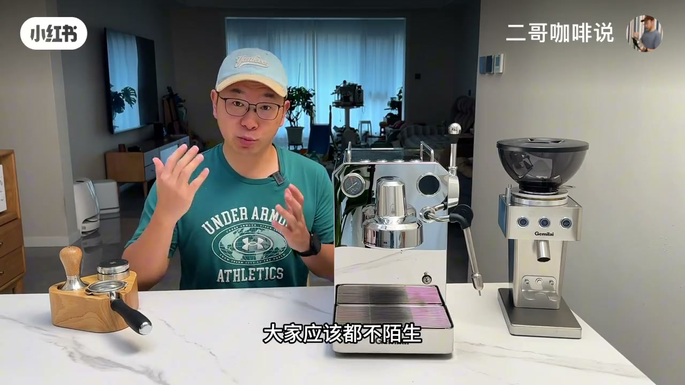
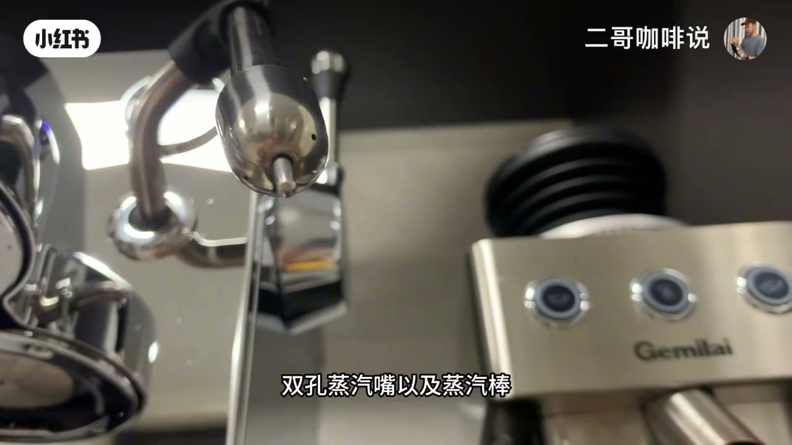
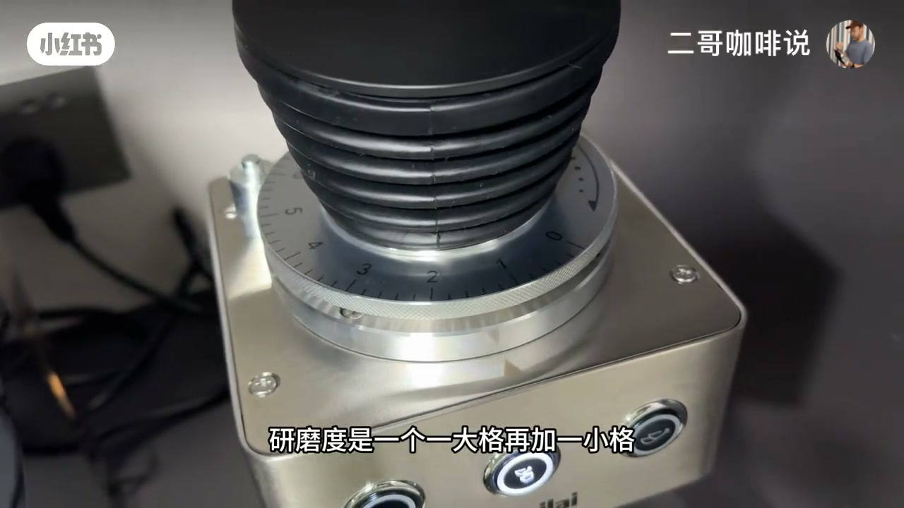
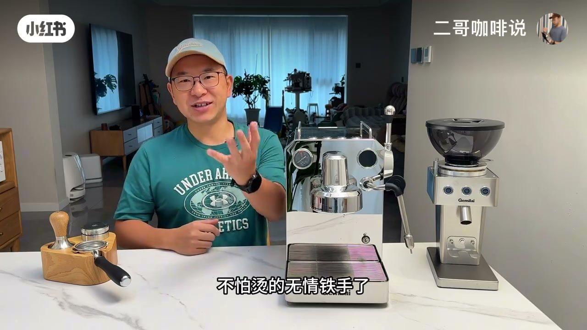
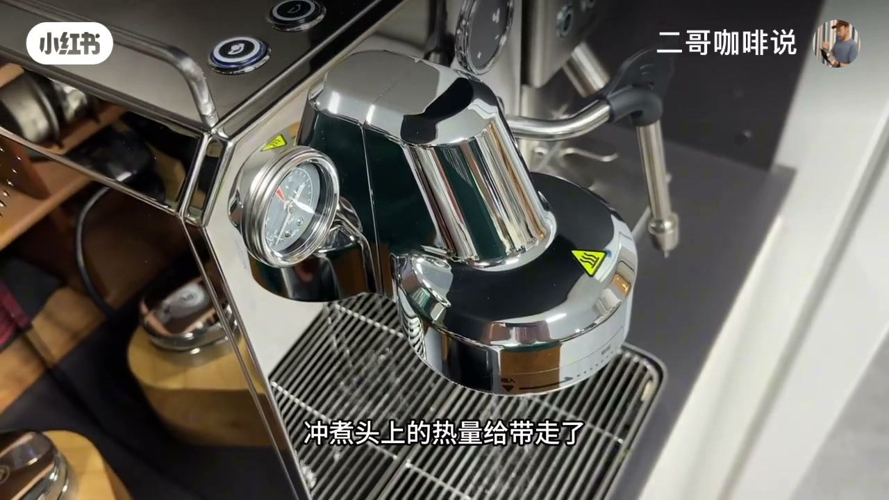
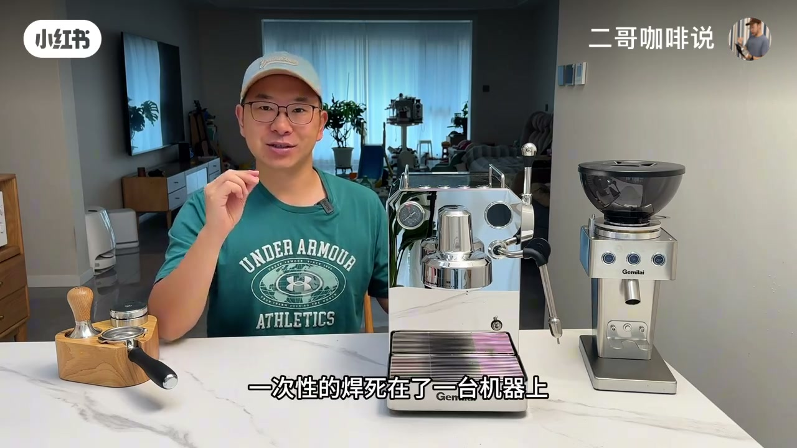

内容要点
知识结构
猫头鹰从 3006→A→H 一路升级；Go 补齐双泵双加热块、双 PID、冷萃 OPV，并首次定温打奶。开场抛出「极大成还是堆料创新」的问题。
延续 3006H 仿生双表「眼睛」、8K 镜面抛光；分水网、双孔蒸汽嘴与蒸汽棒改纯钛，耐腐蚀易清洁；一键除垢偏懒人友好。
萃取约 92℃、奶泡停温约 56℃；建议萃取时长从默认 25 秒改到 32 秒；双独立加热块同时工作；定温打奶自动停，不用练「铁手」。增重约 23.8g、含水率不到 8%；提醒极限功率约 3000W。
日常无底手柄可上机，强调并非只能用原厂手柄；浓缩落入牛奶的视觉冲击与晕染是卖点之一。
长按冷萃键约 2 秒放水带走冲煮头热量；研磨介于意式与手冲之间；压力表应呈「打气」式起伏；默认 2 分钟偏长，作者加大量冰时常压到约 70 秒。
性能 Go>H>A>基础款且价格四级跳；从零预算够就一步到位；已有 A/H 要看多出来的定温打奶、纯钛件与宽度功能是否刚需。
3006Go 是加热块路线上功能宽度很满的一台猫头鹰：解决「同时萃取打奶」真痛点，再用定温打奶与冷萃把操作门槛压低；买不买关键看你是否已有上一代，以及 16A 电力条件。
图文实录
开场：猫头鹰家族缺的那张牌
视频未交代更早购机背景，直接进入新品测评。作者回顾猫头鹰从十万家用小白入门机一路升到 3006、3006A、3006H——前几代他们都测过。这次 3006Go 被描述为补齐「一直没凑齐的那张牌」：双泵双加热块、双 PID，萃取与打奶互不影响，还有冷萃与稳压 OPV；更关键的是家族以前没有的定温打奶，以及更「钛理钛气」的配件设计。开场留下悬念：水满则溢，这是极大成，还是一次堆料创新？会不会是收官之作？
外观：8K 镜面与纯钛接触件
整机设计语言延续 3006H，双表像猫头鹰一对眼睛「盯着你调参数」。机身用上白晶系列同款 8K 镜面抛光，作者形容「完全可以当做镜子来照」，不锈钢质感上了一个台阶；点状镂空花纹被理解为造型兼顾散热。

配件方面，分水网、双孔蒸汽嘴与蒸汽棒改成纯钛——这些都是与热水、奶直接接触的部位。相对不锈钢，作者强调耐腐蚀更强、更易清洁，追求更极致口感；蒸汽嘴出厂即纯钛，分水网需自行拧螺丝更换。最右侧一键除垢按钮被标为懒人友好的自清洁入口。

拿铁实操：参数落到杯子
参数部分作者刻意不细拆，改用一杯拿铁感受体验。磨豆用口播中的平刀磨（64mm），日常口粮豆；研磨度「一大格再加一小格」，粉量约 18.4g，研磨时间约 11 秒，单粉仓留粉约 0.2g。因双泵双加热块双 PID，他分别设定萃取温度约 92℃、奶泡停止温度约 56℃，并提前备好牛奶。

上手柄前先放热水；预浸泡设定为 3 秒预浸泡 + 3 秒等待，两段可独立设定。他特别推荐所有猫头鹰用户：默认萃取时长 25 秒，建议改到 32 秒。萃取同时即可打奶——两个独立加热块互不抢热。58mm 冲煮头上有 PTC 补温，下面是纯钛分水网，搭配约 11–12 bar 稳压 OPV，粉磨偏细也能稳住压力。
蒸汽一向是猫头鹰杀手锏；这次再加定温打奶：旋转力道足，到设定温度自动停。作者最直观的感受是核心操作阶段不再手忙脚乱，「也不用再练一只不怕烫的无情铁手」。增重约 23.8g、含水率不到 8%，随后认真拉了一个「亚文小爱心」，并称出品可秒杀外面精品咖啡馆——此为 UP 主现场口感判断。1.7L 水箱估摸约 20 杯量；突然提醒：极限功率可到约 3000W，家里若没有 16A 插座，需要像他一样配转接头。

无底 Dirty：视觉与适配性
接着用日常无底手柄做 Dirty。作者强调萃头适配性好，并非只能用原厂手柄；预浸泡时间略加长后，浓缩落入牛奶的瞬间、无底萃取画面与晕染「美如画」。喝 Dirty 勾起他测评 3006 时在苏梅岛意式餐厅偶遇同款杯子、后来多次打碎又重买的回忆——所以这期换成茶色杯。这段偏情感旁支，产品硬信息仍是：无底可上机、视觉冲击到位。
H2C 冷萃：降温捷径与点泵压力表
相对 3006H 新增的大功能是 H2C 冷萃系统。与 3006A 一样，建议关闭 PTC 辅助加热；也不用干等冷却——长按冷萃键约两秒进入放水模式，放水不到 10 秒基本带走冲煮头热量，PTC 也会立即关闭。

研磨要比意式粗、介于意式与手冲之间（比摩卡壶仍粗一些）；冷萃不建议无底，用自带双份手柄即可。逻辑与 3006A 类似：约两秒热水预浸泡激发风味，再进入冷水泵低温低压点泵式萃取。研磨合适时，压力表会像自行车打气一样一泵一泵起伏。默认两分钟作者觉得偏长——自己爱加大量冰，约 70 秒就够，因为后面浓度接近水。冷萃液光泽透亮、口感清爽；即使用烘焙偏深的拼配，相对冰美式的杂味涩味也几乎喝不到；深红豆子萃取时还有「流沙美式」感。以上均为现场品尝描述。
家族排序与买不买
回看家族：3006 入门；3006A 加冷萃、可关 PTC、稳压 OPV；3006H 萃取蒸汽同时开工，曾一跃成入门机皇；这次 Go 在齐装功能外再加定温打奶与纯钛接触件，加热块路线「基本顶天」。作者给出性能排序：Go > H > A > 基础款，价格也四级跳。

他强调这不是简单堆料：双泵双加热块解决同时操作的真实痛点；加热块机不储水、约 1 分 15 秒超快开机；冷萃与定温打奶拉开功能宽度；纯钛服务风味呈现。选型建议：从零入手、预算允许，按「可以不用但不能没有」直接上 Go 一步到位；手里已有 A 或 H，则看多出来的一两级功能是否真正需要。结语称 Go 基本上是市面上加热块中配置相当顶的一款——属作者综合判断。最后照例求赞关注，「一起谈做咖啡一切」。